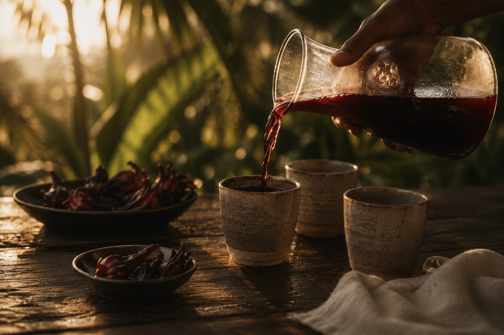
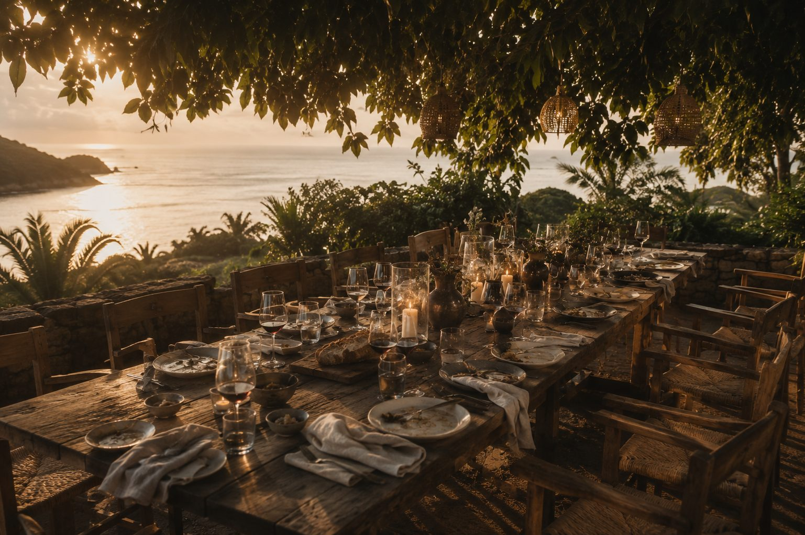
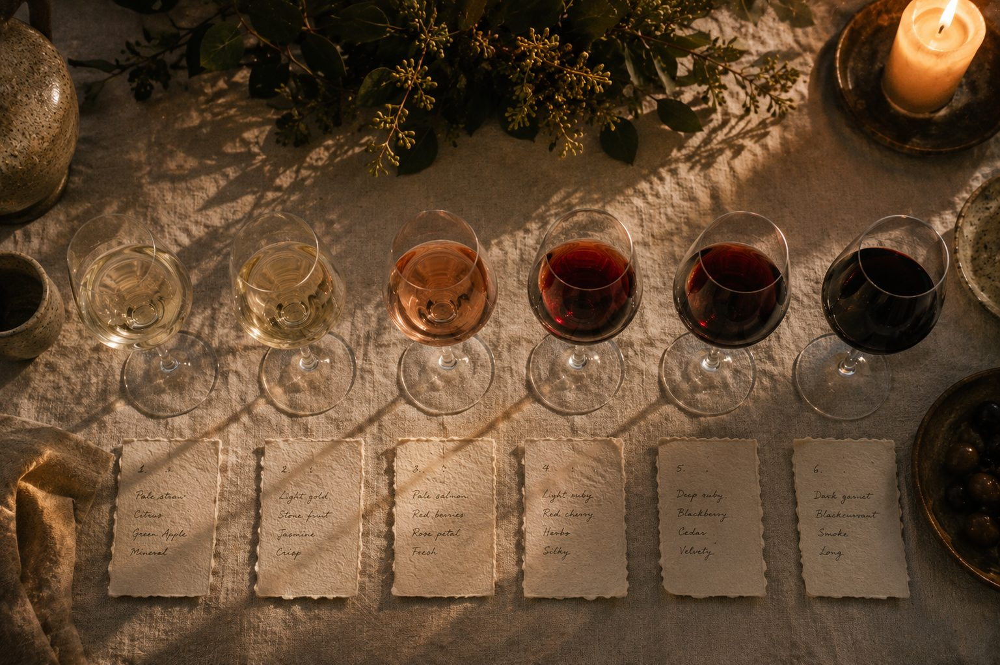
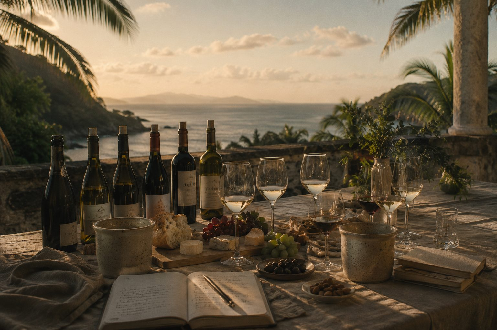

The quickest way to understand a place is often around a table.
Some meals belong exactly where they are served. Beneath an almond tree beside the sea. Overlooking a quiet valley. On the veranda of an old estate. The table changes with the season, the people hosting it and the ingredients the islands offer that day. Salt & Sorrel is less about dining than about being welcomed: an unhurried gathering where conversation, place and food belong to one another.
The Vision
A table that tastes like the island
Salt & Sorrel is a Vincentian tasting experience built around the island's own ingredients, wines and traditions, presented with restraint and care around a single guided table. Some tables are shared. Others are private. Each is shaped as much by conversation as by the food itself.
The Table
Gather. Taste. Linger.

A table, not a menu card
A beautifully laid table awaits. The first wine has already been poured. Conversation begins before the first course arrives.

Fruit wine, breadfruit, cocoa and salt
Each pour introduces another ingredient, season or story from the islands, moving naturally between savoury and sweet.

The evening doesn't end at dessert
Coffee, chocolate and conversation close the table, with no fixed point at which guests are expected to leave.
For Hospitality Partners
A signature table for your guests.
Salt & Sorrel is designed to complement an existing food and beverage programme rather than replace it, offering guests a distinctive way to experience Saint Vincent through its food and produce, personally hosted at every table by SALT. Most preparation is completed in advance, allowing venue kitchens to focus on final finishing and service, and each partnership is shaped to suit the property, its team and its guests, so that it feels as though it belongs exactly where it is served.
Ways to offer Salt & Sorrel
- 01The Villa Table: a tasting hosted privately at a guest's villa or residence.
- 02The Destination Table: a recurring or seasonal tasting hosted at a partner property.
- 03Fly & Taste: Salt & Sorrel paired with a SALT Air flight as a single day's arc.
Our Role
- Menu and pairing development
- Local producer curation
- Tasting host and guest storytelling
- Guest materials and table presentation
Working Together
- Venue and kitchen access, including space for final finishing and plating
- Tables, seating and shade
- Guest marketing and concierge sales
- Booking support and a weather backup location
Closing Vision
A table that could exist nowhere else
We welcome conversations with hospitality, venue and producer partners.
Discuss a hospitality partnership